Review
The data we'll be using comes from three seperate datasets with the same features. Each entry in the datasets is a separate epitope, which is a region of the protein shell of a virus. The features of the dataset are an assortment of chemical properties of each epitope. Which virus the epitope is from is precisely the difference between the three datasets: we have a large, labeled general dataset for "B-Cell" epitopes, which refers a collection of many miscellanious viruses. There is a smaller labeled dataset for SARS, which is a virus closely related to COVID-19, and then we have a large but unlabeled dataset for COVID-19. The labels are for "antibody valency"; a valent epitope can be used as a vaccine, while a nonvalent epitope cannot. So, the task is to use the features of each epitope in the labeled datasets to build a model which can predict the antibody valencies for COVID-19 epitopes.
Correlation Matrix Heatmap
For each of the three datasets, we plotted correlation matrix heatmaps to show the correlations between features. For the B-cell dataset, we see that the strongest correlation between features is between parker and kolaskar_tongaonkar, and that the correlation is negative. We can see that there are some features which have a stronger correlation to the target value, which is vaccine efficacy, so when we are attempting to make predictions later on during the supervised learning portion of our project, we will emphasize the inclusion of these particular features. From these visualizations, it is clear that the features more strongly correlated to the target value in the SARS dataset than in the B-cell. Also, even though we plotted the data again normalized, this did not change the correlation values.
 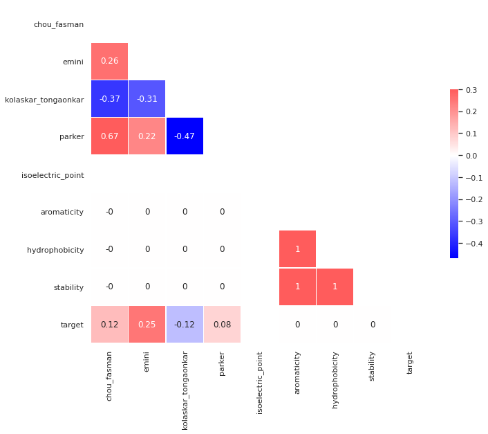
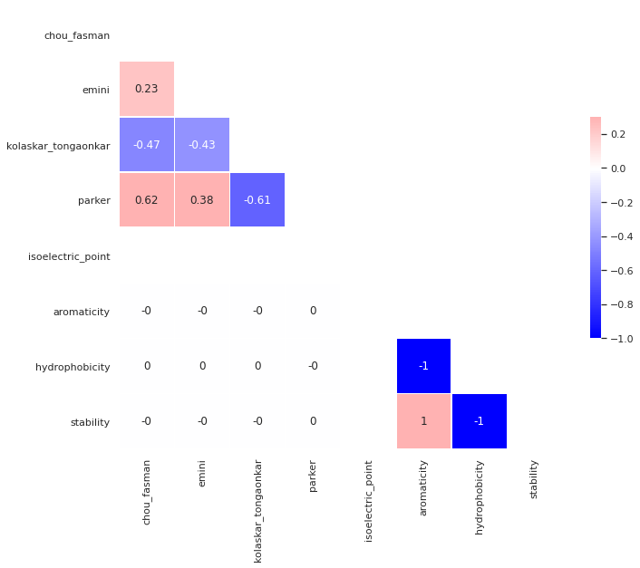
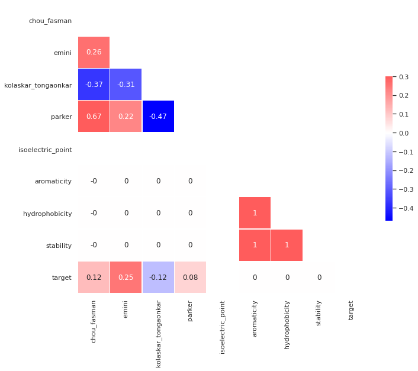
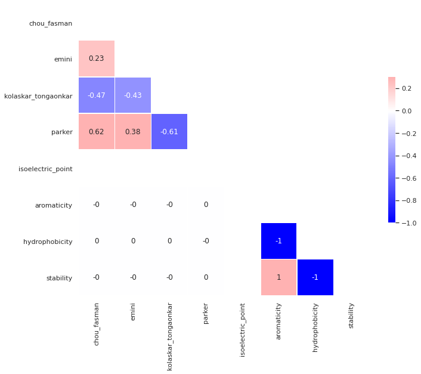
Data Processing
Before we could get started with unsupervised learning on our data, we had to clean the data. This meant a number of steps to convert our datasets into a format which would be suitable for the unsupervised learning algorithms.
Sample of B-Cell Data Before Cleaning
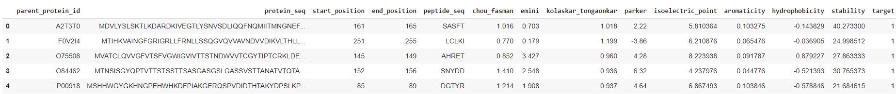First we removed the string based columns from the dataset such as protein_seq and peptide_seq. This left us with only numerical data to work with. Next we removed data that was meant solely for clerical purposes such as id, parent_protein_id, start_index, and end_index, which are useful for indexing the protein within the original dataset, but will not be useful features for learning properties of proteins which make them effective vaccine candidates. We also removed the target columns because this cleaning was for the unsupervised phase of our project.
After removing columns that were not useful and the target column, we decided to normalize the data to help avoid issues that could arise from different scaling of the features in the dataset. To do this we subtracted the minimum value of the feature and divided by the range.
Sample of B-Cell Data After Cleaning
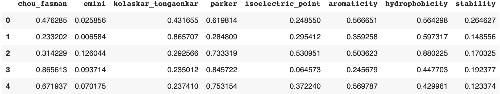Principal Component Analysis
One approach we took in feature engineering with our dataset was Principal Component Analysis. We applied PCA to our B-Cell, SARS, and COVID-19 datasets and plotted the recovered variance as a function of how many components we preserved.
Recovered Variance
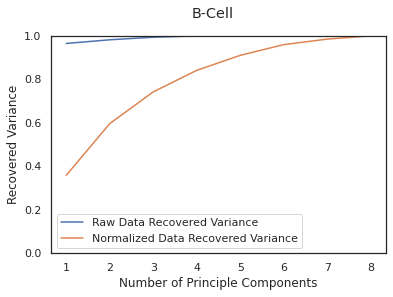 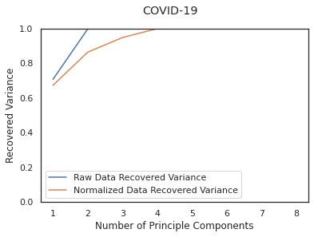Looking at the raw datasets it appears that PCA was able to successfully reduce the dimensionality of the datasets while maintaining variance, however upon looking at the normalized data this was not the same case. It is important to note that while it appears that SARS and COVID only require 4 principal components to capture all the variance, this is because only 4 of the features vary for the SARS and COVID data, so this is not an indicator of successful dimensionality reduction. To further explore this phenomenon of the normalized data taking more components to recover the variance, we plotted the composition of the principal components for both the normalized and raw data.
Component Feature Composition
B-Cell Principal Component Composition Raw vs Normalized
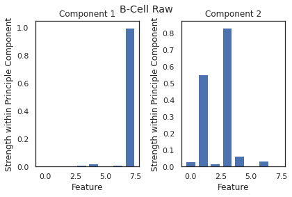 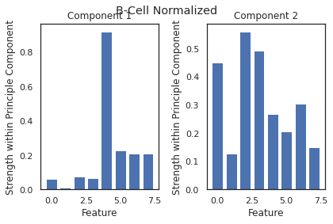SARS Principal Component Composition Raw vs Normalized
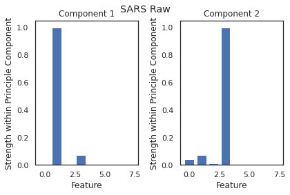 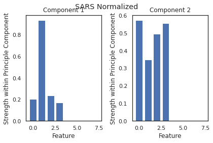COVID-19 Principal Component Composition Raw vs Normalized
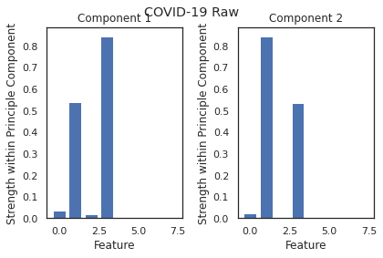 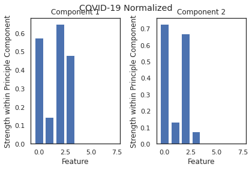Looking at these bar graphs it becomes clear that the raw datasets are able to recover so much of the variance because that variance is captured by only a few features, where the normalized datasets have a greater contribution from a wider spread of features.
With this insight that normalizing our datasets led to more representative principal components, and that we would need to use an equal number of components to features to capture an acceptable amount of variance in our dataset, we determined PCA would not be useful for dimensionality reduction in feature engineering for our data.
Scatterplots
As one last step to see if PCA could be of any use to us we decided to plot our datasets after reducing them to their two primary principal components. For the B-Cell and SARS datasets we also had labels for vaccine efficacy - our target value, so we colored the scatter plots based on those target values to see if there were any trends in our reduced datasets.
B-Cell Dataset Plotted on 2 Principal Axis
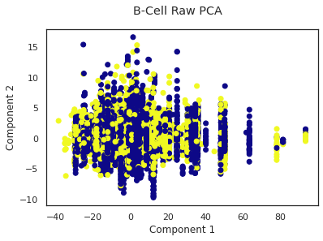 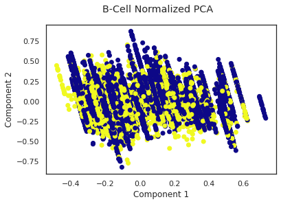SARS Dataset Plotted on 2 Principal Axis
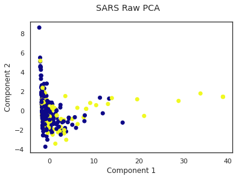 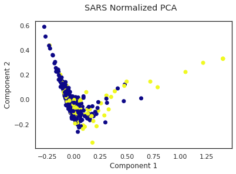COVID-19 Dataset Plotted on 2 Principal Axis
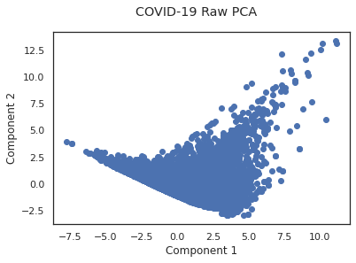 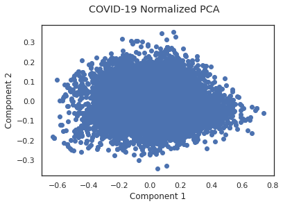Unfortunately, plotting the datasets on their principal axis did not reveal any obvious trends in the data.
Clustering Approach
To achieve an optimal cluster assignment for the datapoints, it is recommended to find an optimal number of clusters first. Thus, we plotted the Distortion score derived from scipy Cluster algorithms log-likelihood score functions.
However, we took this opportunity to test the similarities between the three datasets we have: COVID, B-cell, and SARS. We tested KMeans and GMM on the given datasets, and in turn evaluated which of these two worked the best in regards to the score resulting from their corresponding functions. In addition, we tested which form of teh datasets worked better overall in these cluser algorithms: raw untouched dataset, or numerical normalized dataset.
From the analysis of these three graphs, we found that the 6 number of clusters to be good middle ground between too high and low in regards to the score as well. In nearly all of the three datasets, KMeans either performs equally as well or better than GMM, thus we decided on the KMeans as the better clustering algorithm for such datasets. For ease of manipulation, and understanding, we made a group decision of using normalized datasets at every possible point in the project. Overall, the plots demonstrated that for the unsupervised learning part of the project, we evaluted the KMeans algorithm on the normalized datasets using 6 clusters as the starting point.
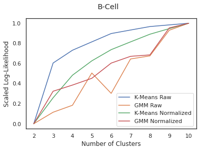 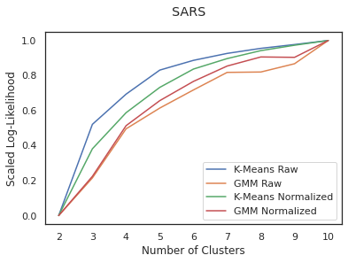 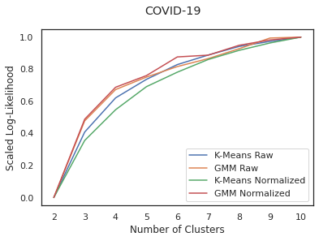Clustering Evaluation
One simple statistic we can look at to begin evaluating the clustering models is the number of data points in each cluster. This does not imply correctness or incorrectness, but can tell us the sizes of each group.
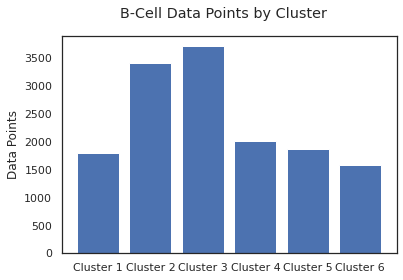 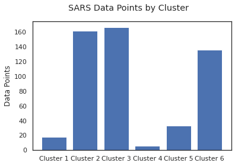 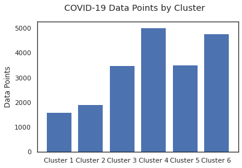The clusters' sizes are fairly even between the B-Cell and COVID-19 epitopes, but half of the SARS clusters are much smaller than the others. This is interesting but does not necessarily mean anything. SARS is also the smallest dataset, so the uneven cluster sizes might be caused by that.
We have ground truth labels for the B-Cell and SARS epitopes, so we can compare the total number of valent and nonvalent epitopes in each cluster. With those totals, we can also calculate purity for the clusters: the portion of data points in that cluster which belong to that cluster's most numerous ground truth label.
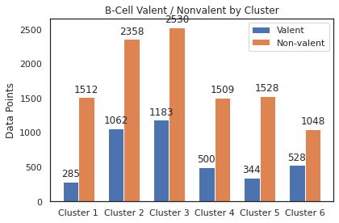
For the B-Cell clusters, the purities range from about 0.65 to about 0.85. This might seem decent initially because a purity of 1 is a perfect match between clustering assignment and ground truth label. However, every cluster is matching with the same label (nonvalent) and the portion of nonvalent epitopes in the whole B-Cell dataset is about 0.75 (indicated with the red dashed line). That means that the cluster assignments are more or less a random sampling with regard to the ground truth label.
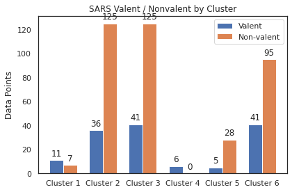 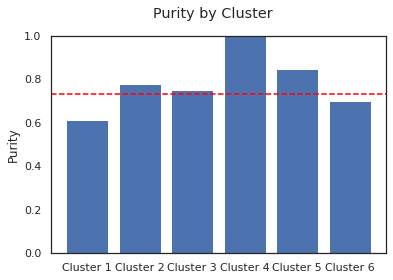Unlike the B-Cell clusters, there are two clusters in the SARS model which match with the valent ground truth label. One of them even has a purity of 1! Unfortunately, those are also the two smallest clusters, so they aren't very useful for the majority of the data points. Among the remaining clusters, we observe the same trend as the B-Cell data: each cluster has a roughly random sample of valent and nonvalent datapoints. These observations lead us to believe that clustering is insufficent for building the desired model to classify epitopes and that we will need to utilize supervised learning to achieve better results.